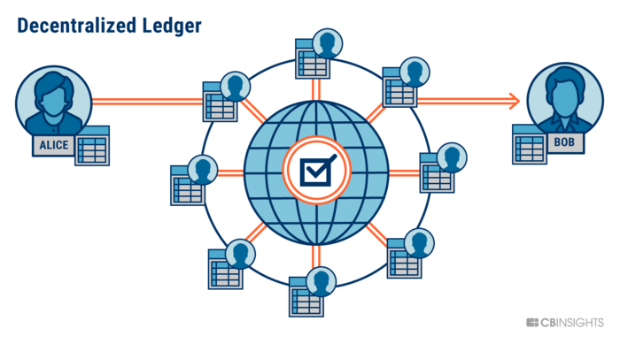
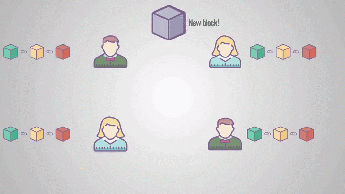

Blockchain
 11 May 2018
11 May 2018
The latest buzzword in technology "blockchain" is widely heard, in reference to Bitcoin and other cryptocurrencies. It's an abstract term whose meaning isn't easily understood from the word, this article aims to give you a simple and logical explanation on this subject.
Blockchain has its roots as a concept in Computer Science primarily, in the field of cryptography and data structures before being used in cryptocurrency. It allows consumers and suppliers to connect directly, removing the need for a third party such as a bank. It acts as a chain of blocks that contains information as its name suggests.
Blockchain technology forms the backbone of cryptocurrencies, solely responsible for it's existence.
A Blockchain is a distributed ledger(accounting record) that is completely open to the public. Data recorded in the blockchain is almost impossible to tamper with. A single block contains data, its hash and the hash code of the previous block.
The data contained in the block may contain transaction information such as the sender, receiver and the amount. A hash essentially acts as a block's identity, similar to your fingerprint, unique and secure. The final element is the hash code of the previous block, effectively creating a chain. This very technique makes the blockchain secure. The first block in a chain is called the Genesis Block.
Tampering with one block causes the hash to change, and hence the link is lost making all the other following blocks invalid. This method alone is not enough to prevent tampering, modern day computers can easily calculate a new hash for each of the following blocks, making your blockchain valid again.
In order to avoid this, blockchains have an additional feature called as the proof of work. This slows down the creation of new blocks. Proof of work is a protocol that has the main goal of deterring cyber-attacks, this involves a distributed and a trustless system if you want to send and/or receive money from someone without a third party payment service.
Mining is the process of creating a list of trust-less transactions, that is the creation of a block. Miners should solve a mathematical puzzle known as the proof-of-work problem in order to prove the legitimacy of a transaction. This puzzle can be solved only by methods of guessing and hence requires large amounts of computational power. Verified transactions are added to the public blockchain.
Blockchain uses a peer to peer network and everyone is allowed to join. When someone joins the network he gets the copy of the blockchain. If a new block is added by a node, all the other nodes check for tampering and add's them to their own blockchain, thus creating a consensus.

In order to tamper a block, all the blocks in the chain must be changed, the proof-of-work re-done for each block and more than half the copies of the blockchains present with the other nodes in the network must be altered.
Blockchain mechanism has attracted the interests of a lot of big companies and its uses are expanding from cryptocurrency to storing medical records, collecting taxes, etc. This field is touted to grow to enormous heights and is one of the leading technologies of the current world.